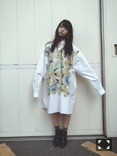
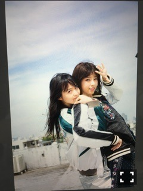
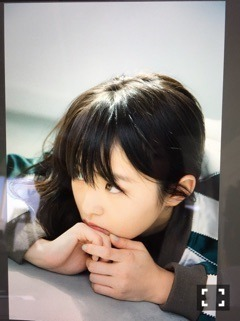

| 2016/10 03 Mon | 今水の中。741回目 |
京都3日間ありがとうございました！
最後のセブンイレブンライブ
15th最後の全国握手会
個別握手会〜
遅くなったけど幕張の服！

ヴィンテージシャツとイヤリング

46時間TVでリメイクしたスウェット
いまさら着た。
気づいた方流石！！
京都の服

ミキオさんのビッグシャツ
好みのラメラメと好みの色使いです。
全握のペア、みり愛！
よく頑張った(>_<)無理せずお大事に。
途中川後とれなちレーンになりました。
来てくださったみなさん
ありがとうございました！
アンダーライブの感想
たくさん聞けたあー
魚たちのLOVE SONG
命は美しい
良かったと言っていただけて
嬉しかった〜
ちなみに命が始まる前の
バレエ的なダンスは自分で創作しました。
2曲とも特にすきな曲だったし
印象的だったから歌えてよかったです！

今日発売の別冊カドカワvol.3
西野氏と表紙だよ∠( `°∀°)／
無さそうで無い組み合わせ。
季刊の中のひとつなので
とても貴重だす！！！！！

ぜひ∠( `°∀°)／
まりか
コメント(603)
2016/10/03 15:30